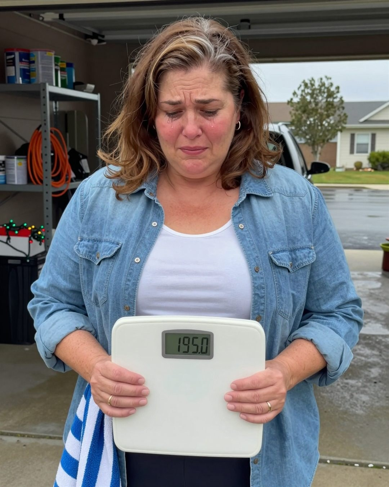
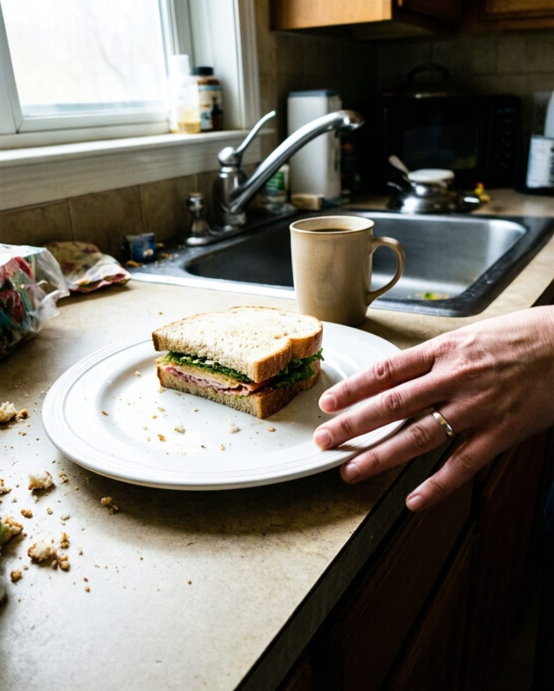
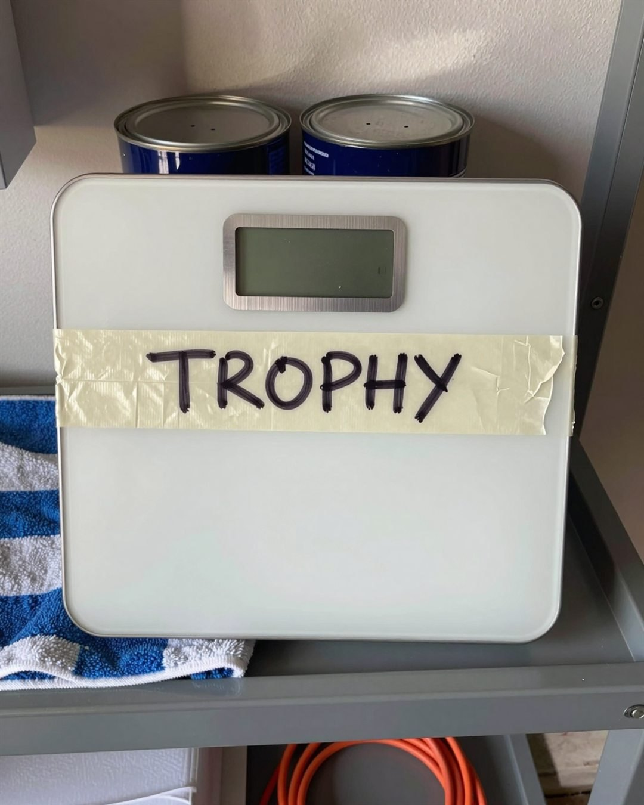

My husband found the scale I'd hidden in the garage. Then he asked me the one question I couldn't answer.
Three years. $4,312. A photo I couldn't stop looking at. And the 9 p.m. voice nobody warned me about.

Saturday, August 23 · 7:40 a.m.
My husband was standing in the garage holding the bathroom scale.
He'd found it on the top shelf, pushed behind the deck stain, wrapped in a blue-striped beach towel like something I'd buried.
"You told me the batteries were dead," he said.
They weren't. I told him that three years ago, and he believed me, because why wouldn't he.
Mark doesn't shout. He never has. He unwrapped the towel, set the scale down on the concrete between us and pressed it with his toe. The little screen lit up.
0.0
Then he just looked at me.
I could have walked back into the house. Twenty-six years of marriage: he would have let me.
I stepped on it.
195.0
I hadn't seen that number in three years. I stepped off and picked the scale up with both hands, like I could still hide it. The number stayed lit.
He didn't look at the number. Not once. He looked at my face, and he asked me a question so quietly I almost didn't hear it.
I couldn't answer him. I walked inside, locked the bathroom door and ran the faucet so he wouldn't hear me.
I'm going to tell you what he asked. But first you need to know what else was wrapped in that towel.
What was in the towel
A photo. Folded in four.
My niece Kayla's wedding. Table 9. Somebody's cousin took it from the side while I was laughing at the best man's speech, and posted it that night with 31 others. I was tagged.
At 1:14 in the morning my phone lit up on the nightstand. A comment under the photo, from my own sister-in-law, Carol:

Four words. Two question marks. She deleted it before breakfast.
I had already read it forty times.
I untagged myself. Then I zoomed in, the way you keep pressing on a bruise. I didn't recognize the woman at Table 9. She was wearing my dress.
The next morning I printed that photo, wrapped it in the towel with the scale and carried both out to the garage. I told myself it was motivation.
It was a hiding place. And it wasn't the only thing I started hiding.
The pictures I'm not in
Here's the part nobody saw.
After Table 9, I stopped being in photographs. Not dramatically. I just became the one who holds the phone. "Let me take it!"
Three Christmases. My daughter's graduation. Our 25th anniversary dinner. Scroll through our family's phones and you'll find me in almost none of them.
At my daughter's graduation, the only proof I was there is my shadow on the walkway.

I was sure nobody had noticed.
I was wrong about that. I was wrong about a lot of things.
$4,312
I know the exact number because I added it up on the back of an envelope, in a grocery store parking lot, and cried so hard a woman knocked on my window to ask if I was okay.
 See what finally worked ▸
See what finally worked ▸The points app: $239. Five weeks.
The meal-kit boxes: $1,104. Until I cancelled them.
The gym I joined in January: $1,080. I went eleven times. I counted.
The shakes, the "metabolism" capsules, the 21-day reset, the online coach who sent me the same voice note twice: $1,889.
Every single one ended the same way. And it wasn't laziness. I know that now. It was what happened every night at 9:12.
9:12 p.m.
The stove clock said 9:12. It always said 9:12. Not hunger. A voice.
There's cake left. You were good all day. Just a sliver. Nobody will know.
I'd argue with it for an hour. Some nights I'd win. Most nights I'd be standing in the fridge light at 10 p.m. with a fork, hating myself before I'd even swallowed.
It never got tired. I did.
I thought everyone had that voice. I thought thin people just had more willpower than me.
The person who proved me wrong was the last person I wanted it to be.
Denise
For nine years Denise and I split a plate of lemon bars at book club. Every month. She was my dessert person. "I will if you will."
In September she walked in and I genuinely did a double take.
Not "she's had her hair done". Different. Lighter on her feet. She got up off that low couch without putting a hand on the arm.
I'm ashamed of my first feeling. It wasn't happiness for her.
It was: you left me.
I asked. She smiled and changed the subject. Two weeks later I asked again in the parking lot, and she went quiet the way people go quiet when they're embarrassed.
"You're going to think I took the easy way out," she said.
I told her I'd spent $4,312 on the hard way. She laughed so loudly a man looked over from his truck. Then she took my hand and said:
"It was never willpower, Lin. It's the noise. Something finally turned the noise down."
That night at 9:12 I texted her. From the fridge.
 Do the two minutes ▸
Do the two minutes ▸If you know that 9 p.m. voice, take the same 2-minute questionnaire Denise showed me ▸
The noise
She called it food noise. The voice at 9:12. Thinking about lunch while you're still eating breakfast.
Some people barely have it. Some of us have it all day long. And every diet I had ever tried was me shouting over it for as long as I could stand, until I couldn't.
You can't out-shout something that never gets tired.
The next morning she showed me what she'd done, on her phone, right there in the parking lot. And I almost said no.
Why I almost closed the tab
Because I've been sold to before. Because every ad in my feed is a 23-year-old with abs telling me to "just commit". Because I was sure there'd be a catch: a sign-up fee, a phone call with a pushy salesman, a cancellation process designed by the devil.
So I went looking for the catch. For two evenings.
I didn't find one.
What it actually is
It's done entirely from your phone. No gym. No meal boxes. No points. No weigh-ins in front of strangers.
You answer a few honest questions: about you, your history, everything you've already tried. Two minutes. I did it at the kitchen table with my coffee going cold.
Not everyone gets a yes. If you're not a fit, they tell you straight away and you pay nothing. I was braced for a no.
I got a yes. The box was on my doorstep the next day.
Inside the app there's a plan for every day, a food log, and a real person you can message any time, day or night. That one surprised me most. And there's a body scanner that tracks fat and muscle every single week.
That last part is why I said yes. That, and the price.
See if you qualify (2 minutes) ▸
Day 4
I left half a sandwich on a plate.

See if you qualify ▸That might sound like nothing to you. I am 54 years old and I had never once left food on a plate. I stood in the kitchen and stared at it like it belonged to somebody else.
Week 2: 9:12 came and went. Silence. I only noticed the next morning, the way you notice the fridge has stopped humming.
Week 5: I walked up four flights to my daughter's new apartment and didn't stop on the second landing to pretend to check my phone.
Every Monday I step on the body scanner they sent me, before coffee. It shows fat and muscle as two separate lines, not one number. Some weeks the weight barely moves, and the scanner shows me why. For the first time in my life, a slow week doesn't make me quit.
The scanner is free right now. Check if you qualify before the offer ends ▸
 Get the free scanner ▸
Get the free scanner ▸The question
That Saturday in August, I came out of the bathroom an hour later. Mark had left a cup of coffee on the carpet outside the door. He was back in the garage. He hadn't moved the scale.
So here's what he asked me, standing on that concrete, so quietly I almost missed it:
"Is this why you won't let me take your picture anymore?"
Three years. Three Christmases. Our anniversary. I thought he'd never noticed.
He had noticed every single time.
Last Sunday
I went out to the garage to find the folding chairs for Thanksgiving.
The old scale was back on the shelf. Same spot, behind the deck stain. But Mark had stuck a strip of masking tape across it.

When I turned around he was standing behind me with his phone up. Not asking. Just waiting.
I let him take it.
The first picture of me in three years. It's on his lock screen now.
And I finally answered his question. Yes. That was why.
It isn't anymore.
If you've read this far
You already know whether you have the noise.
Here is everything I wish someone had told me three years and $4,312 ago:
- 2-minute questionnaire from your phone: you're told straight away if you're a fit
- Everything delivered to your door the next day
- App with a daily plan · food log · a real person to message any time
- $199/month on the 3-month plan (regular $299)
- Cancel anytime, no fees · 90-day money-back guarantee
- Black Friday: the body scanner ($350 value) is free with every plan